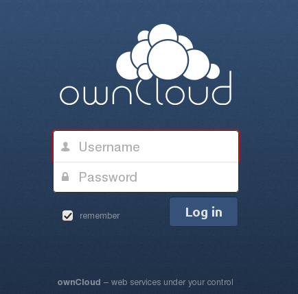

The ownCloud Web Interface¶
You can connect to your ownCloud server using any Web browser; just point it to your ownCloud server and enter your username and password. Supported Web browsers are:
Firefox 14+
Chrome 18+
Safari 5+
IE9+ (except Compatibility Mode)
ownCloud login window
{kind=link}
Note
Some apps like files_external or files_encryption are disabling the remember
checkbox (shown above) on purpose if they are enabled by your administrator.
Navigating the Main User Interface¶
By default, the ownCloud Web interface opens to your Files page. Once you have accessed the ownCloud Server main web interface you can add files, remove files, and make changes based on the access privileges set by you (if you are administering the server) or by your server administrator.

Navigating the main user interface
The ownCloud Main User Interface contains the following fields and functions:
- Apps Selection Menu: Located in the upper left corner, click the arrow to open a dropdown menu to navigate to your various available apps.
- Apps Information field: Located in the left sidebar, this provides filters and tasks associated with your selected app. For example, when you are using the Files apps you have a special set of filters for quickly finding your files, such as files that have been shared with you, and files that you have shared with others. You’ll see different items for other apps.
- Application View: The main central field in the ownCloud user interface. This field displays the contents or user features of your selected app.
- Navigation Bar: Located over the main viewing window (the Application View), this bar provides a type of breadcrumbs navigation that enables you to migrate to higher levels of the folder hierarchy up to the root level (home).
- New button: Located in the Navigation Bar, the
Newbutton enables you to create new files, new folders, or upload existing files from a specified link.
Note
You can also drag and drop files from your file manager into the ownCloud Files Application View to upload them to ownCloud. Currently, the only Web browsers that support drag-and-drop folders are Chrome and Chromium.
Upload button: Located next to the
Newbutton in the Navigation Bar, theUploadbutton opens a file picker for uploading files from your system to the ownCloud server.Search field: The Search field is in the upper right hand corner of your Web interface, for searching for files.
Personal Settings menu: Click on your ownCloud username, located to the right of the Search field, to open your Personal Settings dropdown menu. Your Personal page provides the following settings and features:
- Links to download desktop and mobile apps
- Re-run the First Run Wizard
- Server usage and space availability
- Password management
- Name, email, and profile picture settings
- Interface language settings
- Manage notifications
- SSL certificate manager
- ownCloud Version information
See Setting Your Preferences section to learn more about those settings.